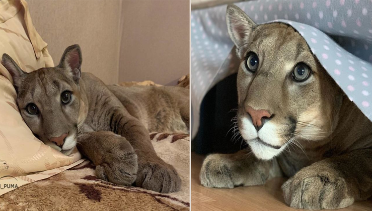

Majestic Puma Rescued From The Zoo Lives As A Spoiled House Cat

Mariya and Aleksandr Dmitriev share a one-bedroom apartment with an odd pet animal – Messi. No not the star himself, but his namesake – a 90lb puma. The Russian couple first spotted Messi at the Saransk Zoo in Penza when he was just eight-months-old and they decided to take a shot and have him.
-
1 | 8
 Messi was one of three jaguars conceived at the zoo. The other two, Suarez and Neymar, were likewise named after acclaimed players to commend the Russian city facilitating four matches of the World Cup. Messi was offered to the Saransk Zoo when he was just three months old and experienced medical issues. Captivated with the wiped out zoo creature the Dmitriev's engaged the proprietors and inquired as to whether they could get him.
Messi was one of three jaguars conceived at the zoo. The other two, Suarez and Neymar, were likewise named after acclaimed players to commend the Russian city facilitating four matches of the World Cup. Messi was offered to the Saransk Zoo when he was just three months old and experienced medical issues. Captivated with the wiped out zoo creature the Dmitriev's engaged the proprietors and inquired as to whether they could get him.
-
2 | 8
 According to his wife Mariya, Aleksandr, 38, had always dreamed of owning a big cat, "He always thought about having a lynx – never a puma. It's hard to explain but we believe that having this puma as a house cat is part of our destiny." "We had three days of thinking hard about whether it was moral to keep such an exotic pet, and whether it was common sense to have one. But nothing could fight our sudden wish," Mariya, 28, told the Mirror. "So we went to the zoo and started negotiations to buy Messi. We were surprised ourselves when they agreed."
According to his wife Mariya, Aleksandr, 38, had always dreamed of owning a big cat, "He always thought about having a lynx – never a puma. It's hard to explain but we believe that having this puma as a house cat is part of our destiny." "We had three days of thinking hard about whether it was moral to keep such an exotic pet, and whether it was common sense to have one. But nothing could fight our sudden wish," Mariya, 28, told the Mirror. "So we went to the zoo and started negotiations to buy Messi. We were surprised ourselves when they agreed."
-
3 | 8
 Taking the responsibility to take care of Messi was a challenge in many ways. Beyond being a wild animal, the cat needed extra medical attention and care, "'he was quite weak and demanded a lot of attention," said Mariya. Even though the couple has nursed the cub back to health, he is still only two-thirds of the size of the average puma.
Taking the responsibility to take care of Messi was a challenge in many ways. Beyond being a wild animal, the cat needed extra medical attention and care, "'he was quite weak and demanded a lot of attention," said Mariya. Even though the couple has nursed the cub back to health, he is still only two-thirds of the size of the average puma.
-
4 | 8
 Just like any other pet, Messi requires lots of exercises to remain healthy. That's why his human parents purchased a special coat and harness for when they go for a walk. "He is like a dog. We started taking him for a walk, step by step. The animal hadn't been really active before, Aleksandr said in an interview with RT, "Now we walk a lot twice a day, as it's supposed to be. It doesn't differ much from owning a dog in this sense."
Just like any other pet, Messi requires lots of exercises to remain healthy. That's why his human parents purchased a special coat and harness for when they go for a walk. "He is like a dog. We started taking him for a walk, step by step. The animal hadn't been really active before, Aleksandr said in an interview with RT, "Now we walk a lot twice a day, as it's supposed to be. It doesn't differ much from owning a dog in this sense."
-
5 | 8
 However, unlike dog training, this lovable giant was not easy. The couple tried to find a wild animal handler but were not successful. Finally, they found a dog training school he could attend and now responds to about 10 different commands. "He convinced us with his behavior that he's a full member of our family and that he wouldn't be doing anything bad apart from some small naughty things. He's very kind and likes contact. He gets on very well with people," says Aleksandr.
However, unlike dog training, this lovable giant was not easy. The couple tried to find a wild animal handler but were not successful. Finally, they found a dog training school he could attend and now responds to about 10 different commands. "He convinced us with his behavior that he's a full member of our family and that he wouldn't be doing anything bad apart from some small naughty things. He's very kind and likes contact. He gets on very well with people," says Aleksandr.
-
6 | 8
 Having an exotic cat in your house is quite rare, so the Dmitrievs document life with their 'housecat' across social media – and people love it. While the real Messi has 100m Instagram followers, cat Messi still does pretty well with over 500k followers on his @I_am_puma account and over 170k subscribers on his YouTube account.
Having an exotic cat in your house is quite rare, so the Dmitrievs document life with their 'housecat' across social media – and people love it. While the real Messi has 100m Instagram followers, cat Messi still does pretty well with over 500k followers on his @I_am_puma account and over 170k subscribers on his YouTube account.
-
7 | 8
 Even though the couple only lives in a one-bedroom apartment they have done their best to accommodate their large companion. Such as converting their hallway into Messi's den – complete with a tree, bamboo walls, and a hiding hole. "He is just an ordinary cat, but a big one. He has all the habits of a cat," says Aleksandr. As you can imagine some animal and environmental rights activists have objections to the Dmitrievs keeping an exotic animal in their home and believe Messi belongs on a wildlife reserve or in a sanctuary. While others note the danger of living with a wild animal.
Even though the couple only lives in a one-bedroom apartment they have done their best to accommodate their large companion. Such as converting their hallway into Messi's den – complete with a tree, bamboo walls, and a hiding hole. "He is just an ordinary cat, but a big one. He has all the habits of a cat," says Aleksandr. As you can imagine some animal and environmental rights activists have objections to the Dmitrievs keeping an exotic animal in their home and believe Messi belongs on a wildlife reserve or in a sanctuary. While others note the danger of living with a wild animal.
-
8 | 8
 But the couple believes that he would not survive alongside other animals as he has never lived alone in the wild. "Of course it's quite dangerous having such a large cat at home, but Messi is a special animal," Mariya told the Mirror.
But the couple believes that he would not survive alongside other animals as he has never lived alone in the wild. "Of course it's quite dangerous having such a large cat at home, but Messi is a special animal," Mariya told the Mirror.